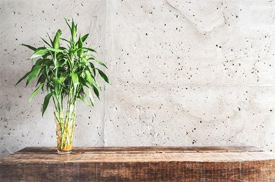

>

<link rel="stylesheet" href="src/home01/style/03.css">

<div class="home01-template-03" style="background-image:url('https://picsum.photos/1920/720/?random=1')">
    
    <div class="left">
        
    </div>
    <div class="right" style="background-image: url('https://picsum.photos/1180/720/?random=1');">
        <div class="box">
            <h3>關於我們</h3>
            <div>
                <p>
                    Create Infinite<br>
                    Possibility
                </p>
                <span>設計工作的脈絡中需求大量的人文與生活本質，而大量講求效率的現代空間所供給的養分少了一分慢下來、靜下來才能醞釀得出的興味。</span>

            </div>
        </div>
    </div>
</div>
<script src="src/home01/js/03.js"></script>

